| 01 | | | INTRO |
| 02 | | | GRAPHS |
| 03 | | | CONNECTIONS |
| 04 | | | ABSTRACTIONS |
| 05 | | | RECOMMENDATIONS |
| 06 | | | OUTTRO |
| 00 | » | mandalabrot.net |
click for sample
user recommendations:
| 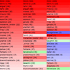 | 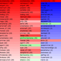 | 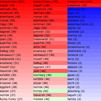 | 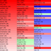 |
| 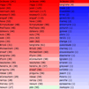 | 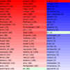 | 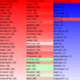 | 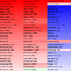 |
| 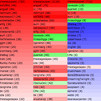 | 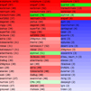 | 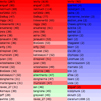 | 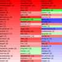 |
| 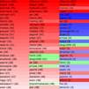 | 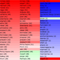 | 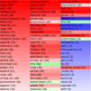 | 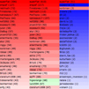 |
The leftmost column uses Red and is a pure url-count ranking; the score is number of urls in common (thus you can tell what the sample size was the score of the user themselves at the top). The middle column uses Green and sorts by the weighted reverse ranking from Figure 02.03. The rightmost column uses Blue and its filtering mechanism rewards high correlation on the more random links that were shared.
common = (P > 1000)
semi-popular = (5 < P <= 25)
random = (P <= 5)